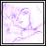

» Entertainment ::: Fanart-----------------------------------------------------------
I love fanart ^-^ and I love drawing, so below are a few fanarts that either I or fans have submitted. Feel free to
submit your own if you have a Xel fanart.

By: Trinity<<
return